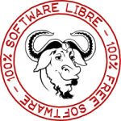
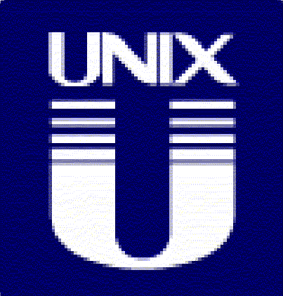
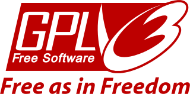

À propos d'AmayaOS
Qu'est-ce qu'AmayaOS ?
AmayaOS est un système d'exploitation de type UNIX. C'est composé que de logiciel libre, donc il respecte votre liberté. Vous pouvez installer AmayaOS dans votre ordinateur sans aucune méfiance (c'est 100% logiciel libre !). Le projet AmayaOS a debuté en 2014 en créant un nouveau système d'exploitation pour PC x86 de 32 bits.

AmayaOS n'est pas GNU/Linux
AmayaOS n'est pas une version de Linux ni de GNU, c'est pas GNU/Linux. AmayaOS est un système d'exploitation qui a un développement indépendant et qui s'appuie sur FreeNOS (Free Niek's Operating System).
AmayaOS suit la philosophie UNIX®
« Écrivez des programmes qui effectuent une seule chose et qui le font bien. Écrivez des programmes qui collaborent. Écrivez des programmes pour gérer des flux de texte, car c'est une interface universelle. » – Doug Mcllroy

Quel sont les enjeux du projet ?
Développer un système d'exploitation léger, capable de marcher fluidement avec peu de RAM, voire jusqu'à 16 Mo de RAM.
Qu'est-ce que le logiciel libre ?
Le logiciel libre est celui qui respecte les 4 libertés essentielles de la philosophie du logiciel libre. « Logiciel libre » [free software] désigne des logiciels qui respectent la liberté des utilisateurs. Ainsi le logiciel libre permet à ses utilisateurs contrôler le programme et ce qu'il fait pour eux. Les quatre libertés essentielles sont les suivantes :
- la liberté d'exécuter le programme comme vous voulez, pour n'importe quel usage (liberté 0) ;
- la liberté d'étudier le fonctionnement du programme, et de le modifier pour qu'il effectue vos tâches informatiques comme vous le souhaitez (liberté 1) ; l'accès au code source est une condition nécessaire ;
- la liberté de redistribuer des copies, donc d'aider votre voisin (liberté 2) ;
- la liberté de distribuer aux autres des copies de vos versions modifiées (liberté 3) ; en faisant cela, vous donnez à toute la communauté une possibilité de profiter de vos changements ; l'accès au code source est une condition nécessaire.
• Qu'est-ce que le logiciel libre ?
Quelle licence utilise AmayaOS ?
AmayaOS utilise la licence GNU General Public License (Licencia de Público General) version 3, qui garantit les 4 libertés du logiciel libre.

Comment peux-je exécuter AmayaOS ?
AmayaOS peut être exécuté depuis un moyen extractible, tel qu'un CD/DVD ou un USB, ou il peut être installé sur le disque dur de votre PC.
• Live CD
Où peux-je trouver le code source ?
AmayaOS a son propre serveur Git, ce qui permet d'avoir accès à son code source le plus récent et aussi à celui qui est en développement.
Vous pouvez le lire, le télécharger, le partager et le changer comme vous voulez.
git.amayaos.com